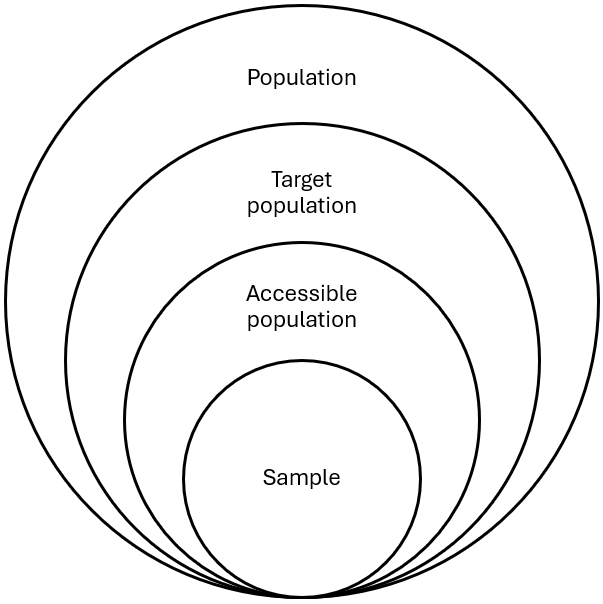
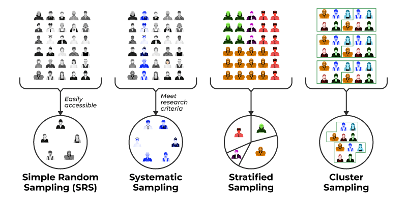
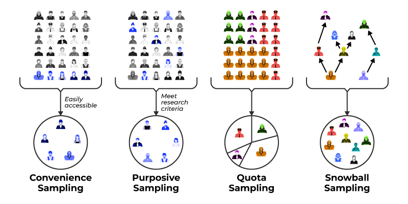

6 Sampling
6.1 Objectives
At the end of this chapter, you should be able to :
- Define the key concepts related to sampling.
- Understand the different sampling techniques.
- Choose an appropriate sampling technique for a study.
- Determine an appropriate sample size for a study.
6.2 Key concepts
6.2.1 Population
In research, the population refers to the group (e.g., people, objects, events) about which we want to know something. For examples, if we want to know how online delivery of courses affect the undergraduate student experience, then our population would be all undergraduate students.
The Target population is the population to which you can hope to generalize, it’s the subset of the population that meets the selection crietria. The selection criteria are aimed at reducing heterogeneity in the population, and eventually reduce the sample size requirement, and improve the likelihood that your study wil generate credible knowledge. For example, if your study aims to understand the experience of first first-year undergraduate students at a university, you may choose to set specific criteria that would create undesired heterogeneity in your population, such as requiring that they are between 18 and 21 years old and enrolled full-time in a program in which in-person courses are the norm. This will prevent you from dealing with the potentially different experiences of students who study online, of those who are mainly working and taking courses part-time, or who are older adults returning to university or doing a second degree.
The accessible populationis the subset of the target population that is accessible to the researcher, and from which a sample will be drawn. It should be as representative as possible of the target population. For example, if your accessible population are residents of Halifax, then it might be a bad idea to aim to generalize your results to people living in rural regions of south america (that would be silly), but your target population could be medium-sized cities in the Atlantic provinces of Canada, for example.
6.2.2 Sample
The sample is the subset of the accessible population that is included in a study. It is drawn from the accessible population, following a probability or non-probability sample method, which are described in the next section. Sampling tends to be a very important step of a study as it will determine the degree to which your findings can produce convincing and reliable knowledge about your target population.

6.3 Probability sampling methods
A sampling methods is probabilistic when every unit of the population has an equal chance of being included in the sample. When that is not the case, the sample method is non-probabilistic.

6.3.1 Simple random sampling
Simple random sampling draws random units from the entire accessible population. The process is as follows:
- Create a list of all units in the accessible population.
- Assign each unit a number.
- Use a random number generator (e.g., https://www.randomizer.org/) to create a random set of n numbers within the range of your list, where n is the desired sample size.
- The units associated with these numbers constitute your random sample.
6.3.2 Systematic random sampling
This method is very similar to the simple random sampling, except that the units are ordered in the list, then each nth unit is selected, starting with a randomly selected position in the list. The process is as follows:
- Create a list of all units in the accessible population.
- Order the units in some way (e.g., alphabetical order).
- Assign each unit a number.
- Use a random number generator (e.g., https://www.randomizer.org/) to generate a single random number within the range of numbers from your list.
- This number is the first chosen unit for your sample.
- Determine an appropriate interval to obtain a sample of the desired size. (population size/desired sample size = interval; ex. 1000/100 = 10)
- Starting from the unit you selected at step #5, move down your list and select each nth where n is your interval.
- Go back to the beginning of the list if you reach the end.
- Stop when you have a sample of the desired size.
6.3.3 Stratified random sampling
The stratified random sample aims to ensure that all groups within an heterogenous population are covered in the study. The process is as follows:
- Create relatively homogenous groups (strata) based on relevant and known characteristics of the population.
- For each group, assign a number from 1 to N where N is the total number of units in the group.
For proportional stratifiedrandom sampling
- For each group, generate n random numbers from 1 to N where N in the size of the group and n is the desired group sample size, calculated like this:
\[ GroupSampleSize = (Group Size/PopulationSize)*StudySampleSize \]
For example, if a group represents 10% of your population, and the sample size for your study is 200, then you would want ro randomly select 0.10 * 200 = 20 units from that group.
For non-proportional stratified random sampling:
- For each group, use a random number generator (e.g., https://www.randomizer.org/) to generate n random numbers from 1 to N where N in the size of the group and n is the desired sample size from that group (typically, but not necessarily, the total sample size desired for the study divided by the number of groups):
\[ GroupSampleSize = StudySampleSize/Number ofgroups \]
For example, if your target sample size is 100, and you have 4 groups, you would select 100/4 = 25 participants from each groups.
6.3.4 Random cluster sampling
The random cluster sampling is convenient when the units are spread geographically, and when there are too many individual units to create a list to perform the above three types of random sampling. Instead of randomly selecting units, the researchers identify groups of units, and randomly selects groups rather than units. The method can layered and end with a random sampling of units. Here’s the process:
- Identify groups.
- Assign a number to each group.
- Generate a random set of numbers within the range of your list.
- If you have more than one level of clustering, repeat steps 1 to 3 for each level.
- select all units in the randomly selected clusters or apply one of the three sampling methods above to sample units within each of the randomly selected clusters.
For example, you could randomly select universities in the Canada (cluster), then randomly select programs within each of the selected universities (second level clusters) and then randomly selected classes withing each of the randomly selected programs (third level clusters) and then create a stratified random sample of students of students from each class.
6.4 Non-probability sampling methods

6.4.1 Convenience sampling
A sample is a convenience sample (also called accidental sample) when the units are selected based on their availability. In fact, they may not be selected at all, but based on whoever happened to show up at a specific time and place. Conveniene samples sometimes rely on ads (e.g. the ones you see sometimes on bulletin boards) to recruit participants.
6.4.2 Purposive sampling
In purposive sampling the units are “cherry picked” by the researcher as a strategy to fulfill the goal of the study. There are several types of strategies:
Extreme cases sampling:for example looking at the best and the worst performing players in a team, so explore factors that may explain their performance.
Homegenous sampling: selecting very similar units can help studying a group or phenomenon with more depth (as opposed to exploring differences between units or groups).
Maximum variation/diversity/heterogeneity sampling: is essentially the opposite of homogenous sampling, and is effective when the goal is to capture the broadest set of different perspective possible, and to explore/describe relationships between variables.
6.4.3 Quota sampling
Quota sampling is similar to the stratified random sampling, but without the randomization element. Units are chosen either through convenience or purposefully, but the researcher also aims at creating a sample that is representative of the population by selecting participants from groups based on known and relevant characteristics. Like in the stratified random sampling. The quotas can be proportional to the the size of each group, of equal size, or based on any other decision made by the researcher.
6.4.4 Snowball sampling
The snowball sample starts with a few number of participants, and then the researcher asks participants to provide the names and contact information for other people who they think also meet the selection criteria for the study. This can be a very useful method when potential participants are very hard to find.
6.5 Choosing a sample method
Some factors to take into account:
- The population: If your population is heterogenous, probability sample tends to be better. However, it may be difficult, in some cases, to have a list of all the units in the accessible population, which is a requirement of probabilty sampling.
- The objective/type of the study: If you are doing correlational predictive/confirmative, or experimental research, you will want to use probability sampling. However, exploratory and descriptive research tends to use more non-probability sampling methods.
- The available time and resources: Probability sampling can require more time and resources than non-probability sampling.
6.6 Choosing a sample size
The general principle is that your sample size should be large enough to give credibility to your findings. A commonly used rule of thumb is that 10% of the accessible population is usually appropriate sample size, or 25-30 participants from each group in a stratified or quota sample.
You can also use a sample size calculator such as this one: https://www.calculator.net/sample-size-calculator.html
Some factors to take into account:
- The type of study: Study that require statistical analyses, like correlational and experimental designs, tend to require a relatively large samples, as opposed to qualitative and exploratory studies than can have very small samples.
- The desired statistical power: According to Cohen (1988), the minimum acceptable level of statistical power in 0.8 (meaning that there is a 80% chance that an effect/relationship is it does it). But if you aim for a statistical power of .95, .99 or .999 (as is often the case) you will need a larger sample.
- The number of variables in your study: The more variables (especially categorical variables) you include in your study, the larger the sample needs to be.
- The homogeneity/heterogeneity of the population: If the target population is believed to be very heterogenous the sample size will need to be larger.
- The expected variability of the measurements: if the observed phenomenon are expected to vary a lot between units, then a larger sample size will be needed to achieve statistically significant results.
6.7 Critically examining sampling methods
Here are some of the questions suggested by Fortin and Gagnon (2016) to critically examine the sampling method used for a study:
- Is the target population well defined?
- Are the inclusion and exclusion criteria clearly established?
- Is the sampling method probabilistic or non-probabilistic?
- What sampling technique was used to recruit participants?
- Is the sample representative of the target population?
- Is the sample size adequate and justified?
- Is the sample clearly described?